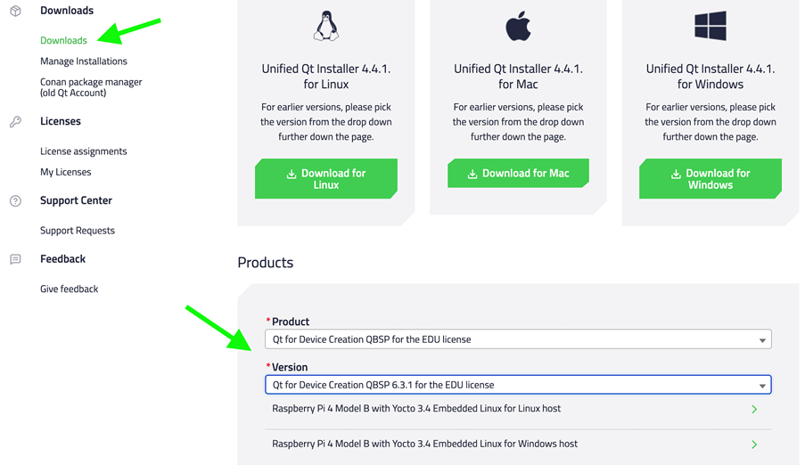
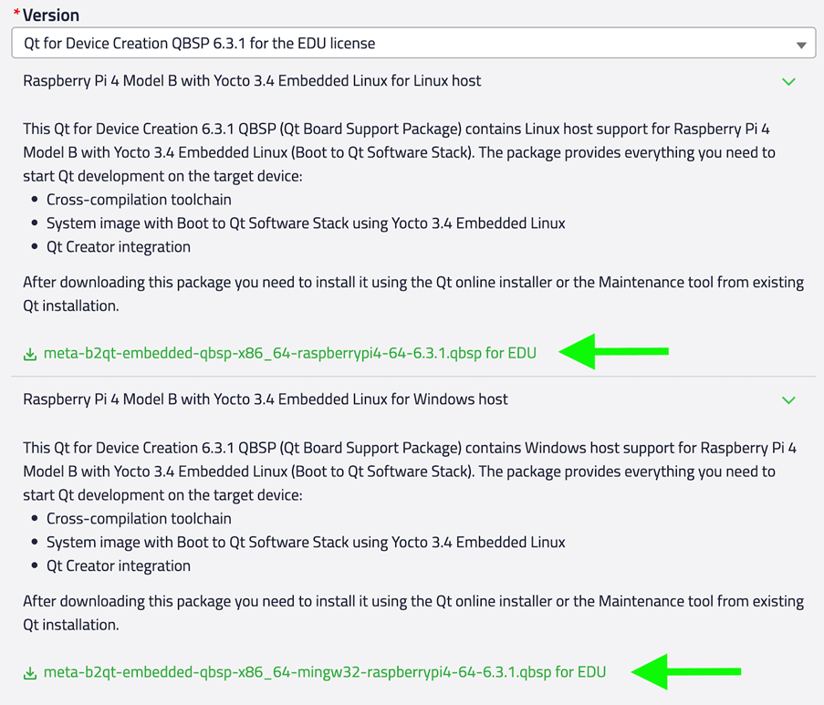
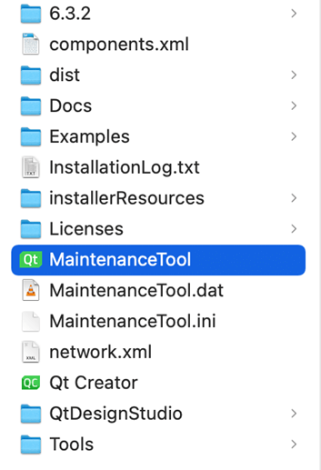
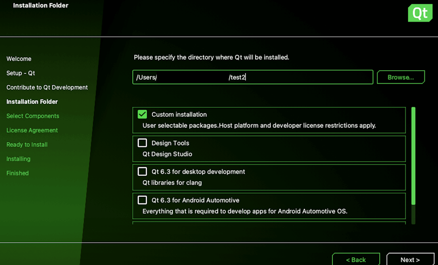
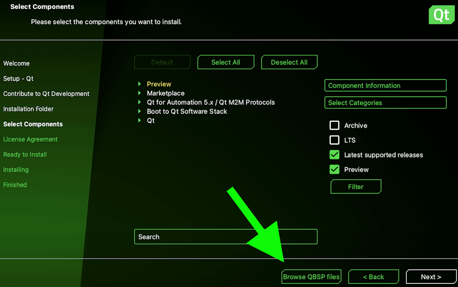

Developing on Raspberry Pi
With Qt Edu for Developers package, you can also develop for embedded devices with Raspberry Pi as target hardware. This is done by adding a Qt Board Support Package (QBSP) to your existing Qt installation, and flashing an SD card used by Raspberry Pi with a Boot to Qt system image.
Note: Windows and Linux are supported as development hosts, but macOS is not supported.
First, complete the Qt Edu for Developers installation steps before continuing.
1. Download QBSP
Log in to your Qt Account. Go to the Downloads section and select Qt for Device Creation QBSP for the EDU license from the drop-down menu in the Product field.

Download the correct version of the .qbsp file for your development host (Windows or Linux).

2. Run the maintenance tool
Go to Qt's installation folder, and run MaintenanceTool.

Maintenance tool allows you to modify your existing Qt installation. Navigate to Custom installation and select Next.

Select Browse QBSP files. In the file dialog window, locate and select the .qbsp file you downloaded from your Qt Account.

After this, the list of available components is updated. Under Boot to Qt Software Stack, select Raspberry Pi and then Next. This will install the Boot to Qt system image and toolchain for Raspberry Pi.
3. Open Qt Creator
To complete the setup, the Boot to Qt system image needs to be flashed to an SD card used as the boot drive for Raspberry Pi. In addition, Qt Creator needs to be configured for connecting to the device running the Boot to Qt software stack, using either a wired or wireless network connection.
These steps are performed in Qt Creator, see Qt Creator: Connecting Boot2Qt Devices for details.